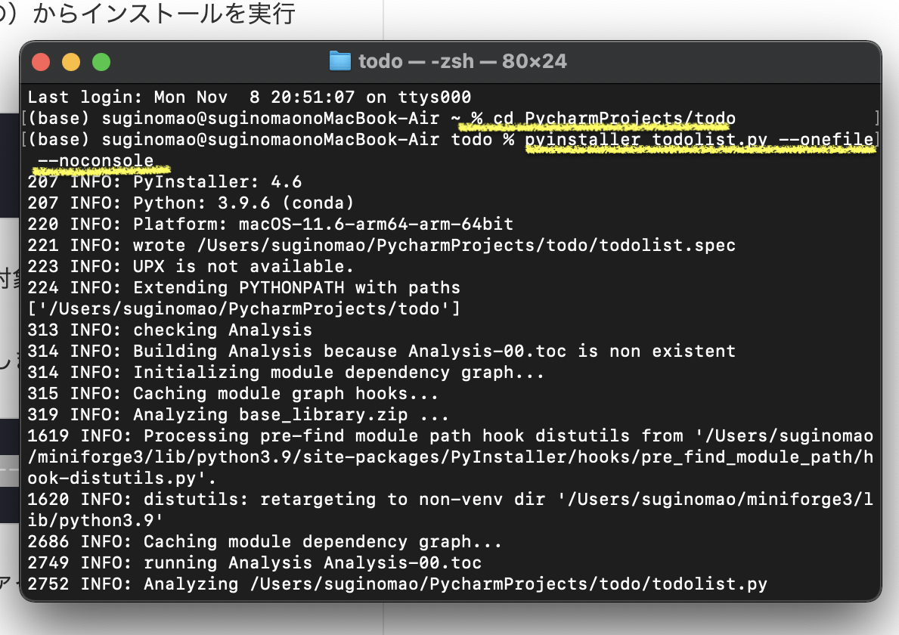
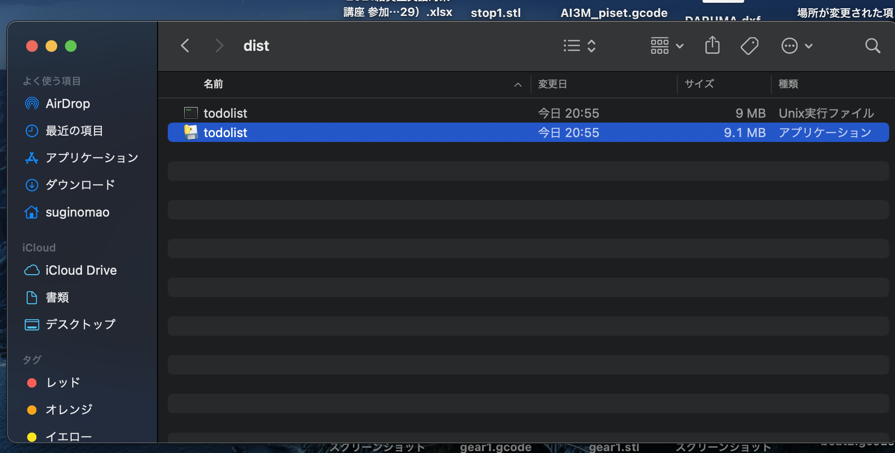
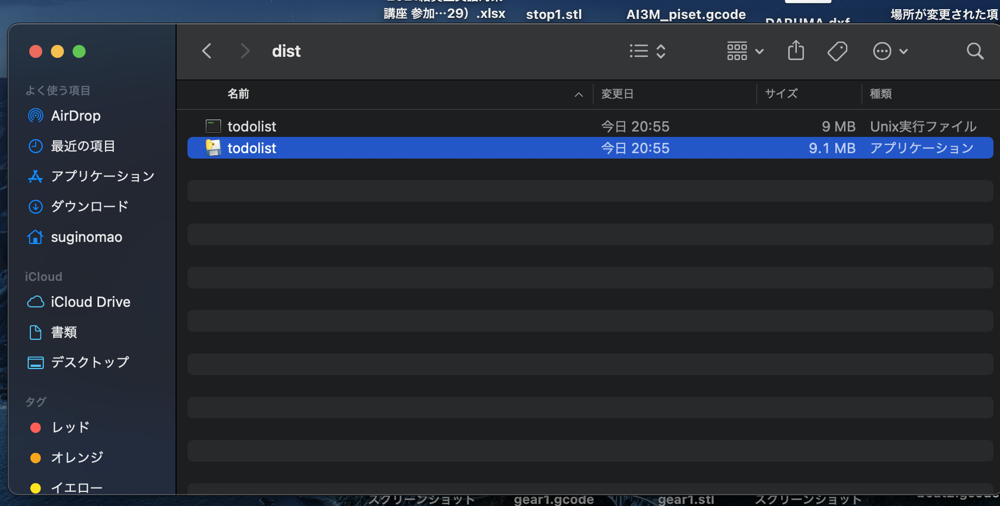

python メモ
pyファイルをデスクトップアプリにするには
- pyinstallerをインストールする。
(Mac)ターミナルを開き、pip install pyinstallerと入力→Enterでインストールする。 - ターミナルでpyファイルがあるディレクトリへ移動する。
例）（ホームディレクトリのPycharmProjectsのtodoファイル→cd PycharmProjects/todoとターミナルに入力→Enter） - ターミナルに、pyinstaller pyファイル名 --onefile --noconsoleと入力→Enter
 - 該当フォルダのdistフォルダにアプリケーションファイルが完成！
 

前の画面に戻る